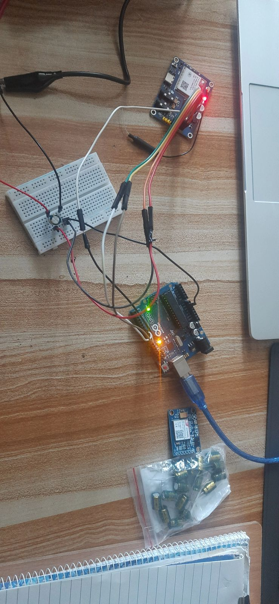
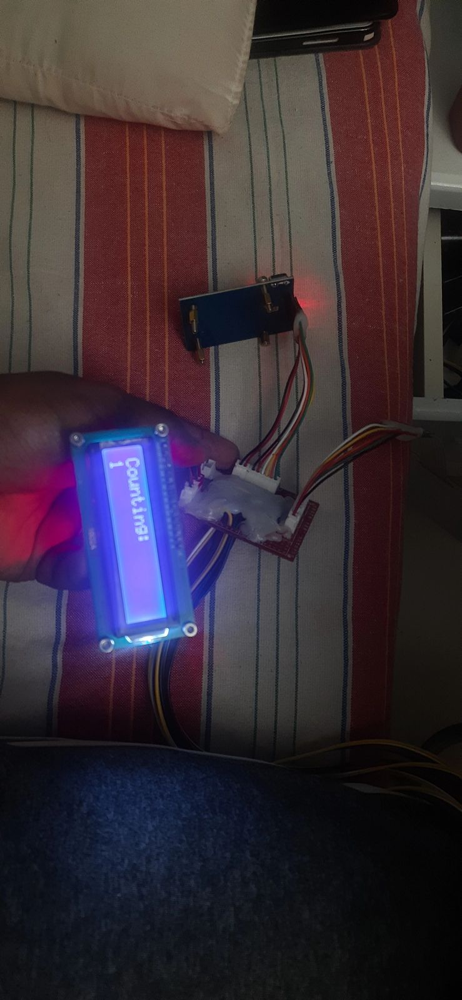

A7670C — Continued Bench Testing
The module kept responding to AT commands reliably, so the rest of the week went into confirming that held up across the full breadboard wiring — not just the minimal bench-PSU setup from Week 06, but the module, Arduino UNO, and breadboard all connected together the way they'd need to be for the real chassis.

This stretch of the week was mostly repetition rather than new problems: re-running the same AT-command checks to make sure the earlier voltage tuning wasn't a one-off fluke.
A7670C SMS Send & Network Registration — Confirmed Working
Partway through the week the module was pushed past AT-command response and into an actual SMS round trip. A reset cycle (AT+CFUN=0 then AT+CFUN=1) brought the radio up cleanly, and a CEREG? check confirmed network registration before anything else was attempted — no point sending against a radio that isn't actually on the network yet.
With registration confirmed, a test message was sent to a real phone number and came back "Sent." A reply arrived and was logged automatically moments later — a genuine two-way SMS round trip, not just transmit-and-hope. The same exchange was repeated a second time to rule out a fluke, and it held up both times.
Note: the screenshots from this test session were lost to a later file-cleanup mistake, so there's no photo to show here — the result itself is confirmed and carried forward into every later post as done.
Camera Tower Assembly Starts
Towards the end of the week, assembly of the camera tower began — the pan/tilt housing and mounting hardware first sketched back in Week 02 and modelled in SolidWorks in Week 04. Rather than assembling it fully before testing anything, sensor logic was tested as each piece went on, to catch wiring problems early instead of after the whole tower was sealed up.

What Did Not Go Well
Camera tower assembly started later in the week than planned, since GSM bring-up and the SMS round-trip test took priority once the full-breadboard wiring needed re-verifying. Otherwise a clean week — the SMS/registration test that had been the longest-open item since Week 06 is now resolved.
Week 07 Checklist
| A7670C re-tested on full breadboard wiring (module + Arduino + breadboard) | ✓ Complete |
| A7670C SMS send / network registration test | ✓ Complete |
| Camera tower assembly started | ✓ Complete |
| Sensor logic integrated and tested mid-assembly | ✓ Complete |